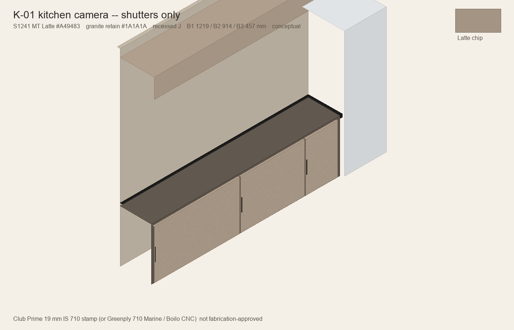
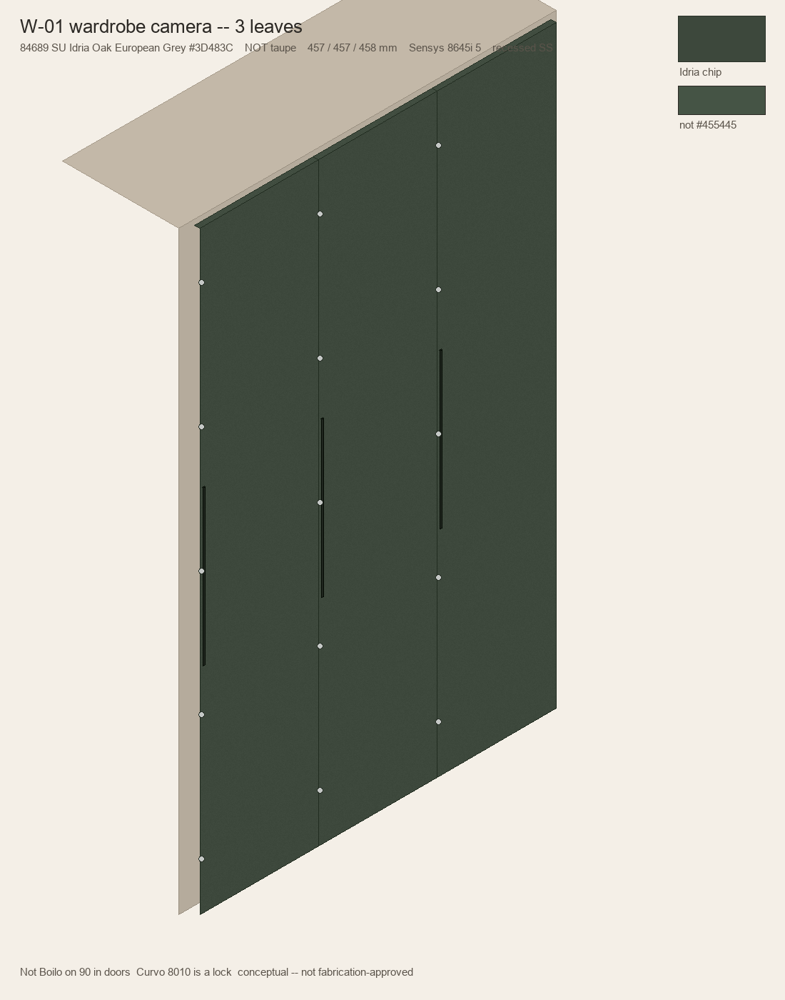

Warm Contemporary Minimalism. Kitchen shutters-only ù 3-door wardrobe ù Idria = European Grey #3D483C not taupe. Conceptual ù not fabrication-approved. Model method: 09 screenshot loop (Grok 4.6 field guide). Blender not found; SVG + three.js + PIL stills.
Pass 1 defects (taupe middle leaf, orbit, implied pulls) fixed. Recapture: kitchen_camera.png / wardrobe_camera.png + qa_loop_report.json.

Kitchen camera ù Latte #A49483 ù granite retain ù recessed J

Wardrobe camera ù Idria #3D483C ù 457 / 457 / 458 ù Sensys 8645i ù5
Kitchen module 2692ù488ù787 mm counter band + loft; wardrobe 1372ù488ù2286 mm, three leaves. Recessed J-slots modelled. Orbit off until you ask ù stills are QA-stable. Not BIM.